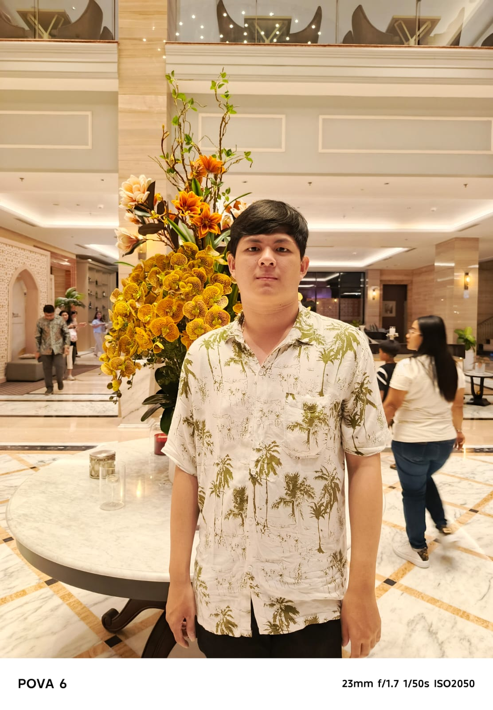
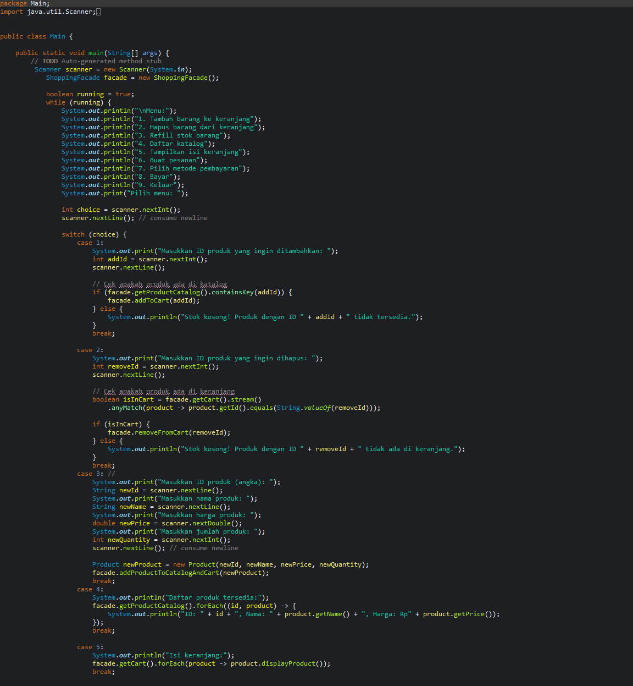

Website InEdu
Website edukasi yang support untuk para disabilitas, lengkap dengan TTS dan mode buta warna.
View ProjectPortfolio · Software Engineering
Welcome to Reeinold's personal website — where code, design, and a good playlist meet.
Saya Reynold Suherman, mahasiswa Computer Science di BINUS Bekasi. Saya suka mengubah ide menjadi antarmuka yang rapi, cepat, dan menyenangkan dipakai.
01 — About
Bukan cuma soal menulis kode — saya menikmati proses memahami masalah, merancang alur, lalu membangun sesuatu yang terasa natural saat dipakai.

CS · Since 2023Halo! Saya Reeinold, seorang pengembang yang bersemangat dalam menciptakan solusi web inovatif. Dengan keahlian dalam HTML, CSS, JavaScript, dan menguasai beberapa bahasa pemrograman lain, saya senang mengubah ide menjadi aplikasi yang fungsional dan estetis.
Ingin mengenal saya lebih dekat? Ada cerita, skill, dan hal-hal kecil di balik layar.
02 — Projects
Setiap proyek adalah satu langkah belajar — mulai dari website edukasi, travel, sampai software desktop. Klik salah satu untuk melihat hasilnya.

Travel website · HCI Lab

Accessible education platform

Figma to code challenge

The site you're on right now

Java desktop application

Desktop automation tool
Website edukasi yang support untuk para disabilitas, lengkap dengan TTS dan mode buta warna.
View ProjectWebsite pertama saya untuk seleksi masuk BSLC (Binus Student Learning Center) — replika Figma jadi halaman nyata.
View ProjectProject website untuk Lab Human Computer Interaction (HCI) tentang website travel.
View ProjectSoftware macro recorder buatan sendiri, dibuat karena kesal dengan tools yang hanya bisa merekam secara global.
View repository DocumentationProject FLA menggunakan Java: SocierMart, dikerjakan bersama kelompok 3.
View repository DocumentationThis responsive portfolio website you're viewing right now — built from scratch, no framework.
View all projects03 — GitHub
Statistik GitHub yang hidup: pilih repositori seperti memilih lagu, dan lihat apa yang sedang saya kerjakan.
Data dari GitHub public API · di-cache 10 menit.
Let's build something
Terbuka untuk freelance, kolaborasi project, atau sekadar ngobrol soal web, desain, dan teknologi.